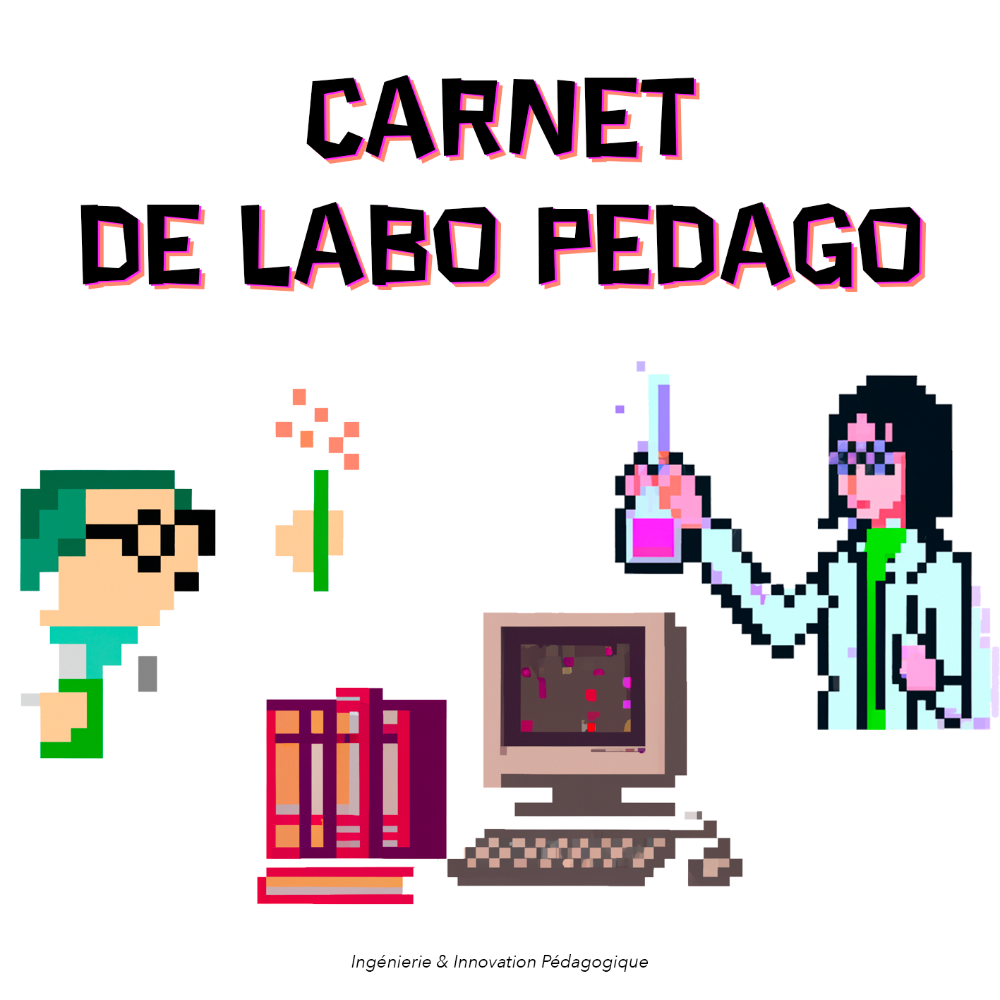

Sommaire
14 articles classés en 5 chapitres
Chaque entrée ci-dessous ouvre sur un article autonome reprenant l'intégralité du contenu du document source.
Chapitre 1 - Égalité
L’approche pédagogique inclusive
Cet article présente l'approche pédagogique inclusive qui vise à reconnaître et à répondre aux besoins d'apprentissage individuels de tous les apprenants. Cette approche éducative reconnaît la diversité des apprenants et encourage l'adaptation de l'enseignemen…
AccessibilitéAdaptationApprentissageInclusivitéUniversel
La conception universelle de l’apprentissage
Ce billet présente la Conception Universelle de l'Apprentissage (CUA), c’est-à-dire un cadre pédagogique flexible et inclusif permettant aux enseignants de programmer et d'organiser l'enseignement en proposant différents moyens de représentation, d'action et d…
ActionEngagementExpressionInclusionReprésentation
Chapitre 2 - Cohérence
L’alignement pédagogique : quésaco ?
Cet article présente le concept d'alignement pédagogique, qui consiste à assurer la cohérence entre les objectifs d'apprentissage, les contenus de cours, les méthodes pédagogiques et les stratégies d'évaluation. Cette méthode permet de promouvoir un apprentiss…
Alignement pédagogiqueApprentissageCohérenceConstructivismeEnseignement
Évaluation : arbitraire, objectivité et subjectivité
Cet article présente l'objectivité et la subjectivité dans l'évaluation, soulignant l'inévitabilité de la subjectivité et la recherche d'une évaluation non-arbitraire et équitable.
Arbitraire, Décision, Évaluation, Objectivité, Subjectivité
Chapitre 3 - Créativité
World Café : une méthode d'idéation pour stimuler la créativité et la collaboration
Cet article présente la méthode d'idéation du World Café, qui favorise la collaboration et la créativité entre les participants pour générer des idées novatrices sur une problématique commune. Cette méthode peut être utilisée dans différents contextes, notamme…
Collaboration, Créativité, Idéation, Intelligence collective, World Café
Nudge et Éducation
Les Nudges sont des dispositifs d'incitation positive conçus pour influencer subtilement les comportements des individus sans les contraindre (par exemple : le passage piéton).
La motivation des apprenant·e·s
La motivation est une force dynamique qui trouve ses racines dans les perceptions des apprenant·e·s qu'il·elle·s entretiennent à la fois d'eux-mêmes et de l'environnement d'apprentissage qui les entoure. Elle exerce une influence profonde sur le niveau d'engag…
Chapitre 4 - Éducation du futur
Rapport du groupe de travail « Enseigner la transition écologique dans le supérieur »
Le rapport, remis à Frédérique Vidal, Ministre de l'Enseignement Supérieur, de la Recherche et de l'Innovation, se concentre sur l'intégration de la transition écologique dans l'enseignement supérieur français. Il propose un socle commun de connaissances sur l…
ÉcologieÉducationEnseignement supérieurTransition écologiqueTransformation pédagogique
Former l’ingénieur du XXIe siècle pour l’intégration des enjeux socio-écologiques en formation d’ingénieur
Ce guide méthodologique, élaboré par The Shift Project en partenariat avec le Groupe INSA, vise à intégrer les enjeux socio-écologiques dans la formation des ingénieurs. Il propose des méthodes pour réaliser un état des lieux, établir un programme complet et c…
ÉcologieEnseignementIngénierieSociété résilienteTransition écologique
Manifeste Former l’ingénieur du XXIe siècle pour l’intégration des enjeux socio-écologiques en formation d’ingénieur
Ce manifeste, élaboré par The Shift Project en partenariat avec le Groupe INSA, vise à transformer la formation des ingénieurs pour intégrer les enjeux socio-écologiques. Il aborde la nécessité de repenser les compétences et connaissances des ingénieurs pour q…
Manuel de la Grande Transition
Le "Manuel de la Grande Transition" est une publication exhaustive qui propose un parcours pédagogique pour comprendre et répondre aux multiples dimensions des défis environnementaux et sociaux du 21e siècle. Il aborde les aspects systémiques de la transition …
Chapitre 5 – Intelligence Artificielle
ChatGPT : c'est quoi ?
ChatGPT est un chatbot qui s'appuie sur un LLM (Large Language Model // Grand modèle de langage.) basé sur l'architecture GPT (Generative Pre-trained Transformer), développé par OpenAI. OpenAI est une entreprise fondée en partie par Elon Musk et qui a bénéfici…
ChatGPT et l'intelligence artificielle dans l'enseignement supérieur
Le guide intitulé "ChatGPT et l'intelligence artificielle dans l'enseignement supérieur : Guide de démarrage rapide" est une publication de l'UNESCO IESALC de 2023. Il présente une introduction à ChatGPT, un outil d'intelligence artificielle (IA), et explore s…
ChatGPTEnseignement SupérieurÉthiqueInnovation PédagogiqueIntelligence Artificielle
IA : Retours d'expérience d'Innovember 23
Recueil de retours d'expérience